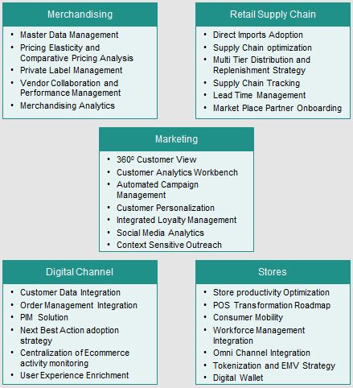

The retail industry is evolving to serve customers who demand “Any Time, Any Place, Any Device” and personalized access. This shift requires retailers to converge all of their information to maintain the channels to drive sales and build their brand. Stores, online portals, mobile and social media channels need to be interconnected and integrated with processes around Merchandising, Supply Chain, and Marketing. Retailers today need systems and processes that respond and deliver seamless customer experience .
With more than 20 years of core retail experience, Syntel enables retailers to achieve these goals. Syntel provides IT assessments backed up by services and transformation initiatives that enable retailers to boost productivity and efficiency at every stage of the business cycle. Our services support both “run the business” and “transform the business” activities.
We partner with our clients to evaluate their existing IT landscape and modernize their IT systems and processes without affecting day-to-day retail operations. Syntel focuses on multi-channel delivery options that enable interconnected merchandizing and interactive digital operations while increasing store productivity.
Syntel’s solutions for retailers are customized to enhance key business operations and ensure early ROI. Our retail service portfolio is focused on:

Automation – developing digital capabilities for retailers
In today’s rapidly evolving landscape, retailers are looking to up their digital game. But is this enough? Is that all it takes to ace the end game?
Click here to find out what leading names in the industry think.